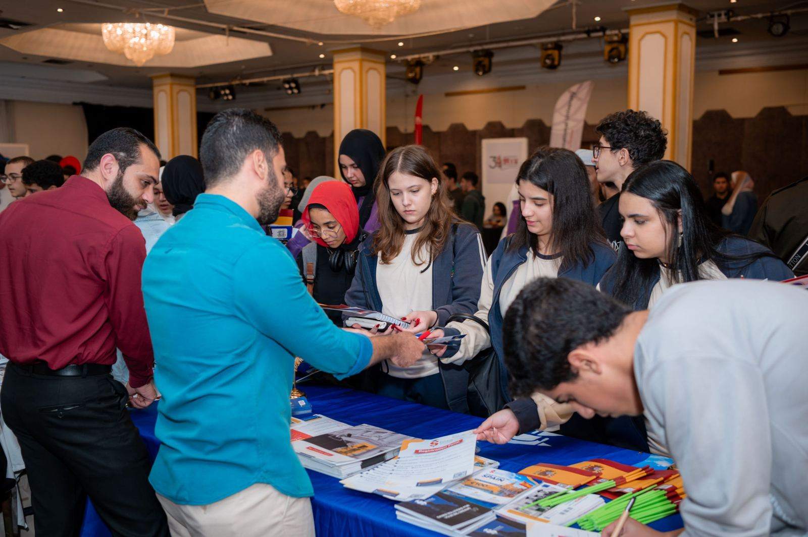

Conferences · Education
EDU GATE Cairo 2027
- Dates
- –
- Venue
- To be confirmed (Cairo)
- Location
- Cairo, Egypt
- Format
- In-person
- Category
- Education
- Industry
- International education fair
- Organiser
- EDU GATE
- Expected attendance
- 22,000
- Official website
- https://edugate-eg.com/
About
20th edition. Official registration site (fetched 24 Nov 2026): 'EDU GATE Cairo 20th Edition', '1 February 2027 – 3 February 2027', hours 10:00 AM–8:00 PM. The official listing marks the Cairo venue as TBC. Egypt dates are local (Africa/Cairo).
Topics: higher education, universities, study abroad, admissions.
Official edugate-eg.com and reg.edugate-eg.com (fetched 24 Nov 2026) state '22,000+ Visitors per event' and 'Reach 22,000+ students and pa[rents]'. Used the official 22,000+ floor for the flagship Cairo fair.